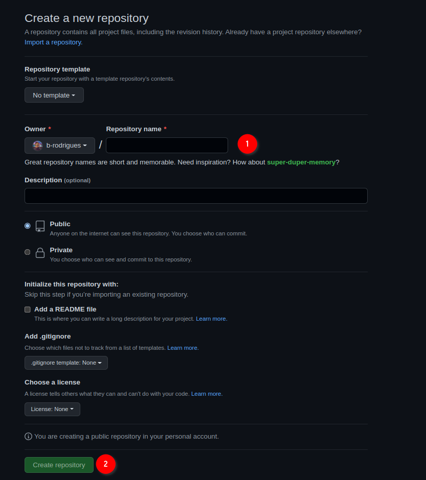

2 Git
What you’ll learn by the end of this chapter: - How to manage your own data science projects using Git’s core command-line tools. - How to collaborate effectively with a team using professional workflows like Pull Requests and Trunk-Based Development. - How to safely review, manage, and integrate code generated by AI assistants like GitHub Copilot.
2.1 Introduction
Git is a software for version control. Version control is absolutely essential in software engineering, or when setting up a RAP. If you don’t install a version control system such as Git, don’t even start trying to set up a RAP. But what does a version control system like Git actually do? The basic workflow of Git is as follows: you start by setting up a repository for a project. On your computer, this is nothing more than a folder with your scripts in it. However, if you’re using Git to keep track of what’s inside that folder, there will be a hidden .git folder with a bunch of files in it. You can forget about that folder, this is for Git’s own internal needs. What matters, is that when you make changes to your files, you can first commit these changes, and then push them back to a repository. Collaborators can copy this repository and synchronize their files saved on their computers with your changes. Your collaborators can then also work on the files, then commit and push the changes to the repository as well.
You can then pull back these changes onto your computer, add more code, commit, push, etc… Git makes it easy to collaborate on projects either with other people, or with future you. It is possible to roll back to previous versions of your code base, you can create new branches of your project to test new features (without affecting the main branch of your code), collaborators can submit patches that you can review and merge, and and and…
In my experience, learning Git is one of the most difficult things there is for students. And this is because Git solves a complex problem, and there is no easy way to solve a complex problem. But I would however say that Git is not unnescessarily complex. So buckle up, because this chapter is not going to be easy.
Git is incredibly powerful, and absolutely essential in our line of work, it is simply not possible to not know at least some basics of Git. And this is what we’re going to do, learn the basics, it’ll keep us plenty busy already.
But for now, let’s pause for a brief moment and watch this video that explains in 2 minutes the general idea of Git.
Let’s get started.
You might have heard of github.com: this is a website that allows programmers to set up repositories on which they can host their code. The way to interact with github.com is via Git; but there are many other website like github.com, such as gitlab.com and bitbucket.com.
For this course, you should create an account on github.com. This should be easy enough. Then you should install Git on your computer.
Another advantage of using GitHub is that, as students, you will have access to Copilot for free. We will be using Copilot as our LLM for pair programming throughout the rest of this course. Get GitHub education here.
2.2 Installing Git
Installing Git is not hard; it installs like any piece of software on your computer. If you’re running a Linux distribution, chances are you already have Git installed. To check if it’s already installed on a Linux system, open a terminal and type which git. If a path gets returned, like usr/bin/git, congratulations, it’s installed, if the command returns nothing you’ll have to install it. On Ubuntu, type sudo apt-get install git and just wait a bit. If you’re using macOS or Windows, you will need to install it manually. For Windows, download the installer from here, and for macOS from here; you’ll see that there are several ways of installing it on macOS, if you’ve never heard of homebrew or macports then install the binary package from here.
It would also be possible to install it with Nix, but because Git is also useful outside of development shells, it is better to have it installed at the level of your operating system.
Next, configure git:
git config --global user.name "Your Name"
git config --global user.email "your.email@example.com"2.3 Setting up a repo
Ok so now that Git is installed, we can actually start using it. First, let’s start by creating a new repository on github.com. As I’ve mentioned in the introductory paragraph, Git will allow you to interact with github.com, and you’ll see in what ways soon enough. For now, login to your github.com account, and create a new repository by clicking on the ‘plus’ sign in the top right corner of your profile page and then choose ‘New repository’:

In the next screen, choose a nice name for your repository and ignore the other options, they’re not important for now. Then click on ‘Create repository’:

Ok, we’re almost done with the easy part. The next screen tells us we can start interacting with the repository. For this, we’re first going to click on ‘README’:

This will add a README file that we can also edit from github.com directly:

Add some lines to the file, and then click on ‘Commit new file’. You’ll end up on the main page of your freshly created repository. We are now done with setting up the repository on github.com. We can now clone the repository onto our machines. For this, click on ‘Code’, then ‘SSH’ and then on the copy icon:

Now we’re going to work exclusively from the command line. While graphical interfaces for Git exist, learning the command line is essential because:
- Most servers run Linux and only provide command line access
- The command line gives you access to all Git features
- Understanding the command line makes you more versatile as a developer
- Many advanced Git operations can only be done from the command line
2.4 Cloning the repository onto your computer
Open your terminal (Linux/macOS) or WSL2 if on Windows. First, let’s navigate to where we want to store our repository. For example, let’s create a directory for our projects:
mkdir ~/Documents/projects
cd ~/Documents/projectsNow let’s clone the repository. Use the SSH URL you copied from GitHub:
git clone git@github.com:yourusername/your-repo-name.gitReplace yourusername and your-repo-name with your actual GitHub username and repository name.
After cloning, navigate into the repository:
cd your-repo-name
ls -laYou should see the files from your repository, including the README file you created, plus a hidden .git directory that contains Git’s internal files.
2.5 Setting up SSH authentication
Before we can push code from our computer to GitHub, we need a way to prove that we are who we say we are. While you can use a username and password (HTTPS), a more secure and professional method is to use SSH (Secure Shell) keys.
Think of it this way: * HTTPS (Password): Like using a password to unlock a door. You have to type it in frequently. * SSH (Key): Like having a special key that unlocks the door automatically. You set it up once, and it grants you access without needing to re-enter a password.
We will create a pair of digital keys: a public key that we will give to GitHub, and a private key that will stay on our computer. When we try to connect, GitHub will use our public key to check if we have the matching private key, proving our identity.
Let’s generate our SSH key pair. We’ll use the modern and highly secure Ed25519 algorithm. Open your terminal (or WSL2 on Windows) and run the following command, replacing the email with the one you used for GitHub:
ssh-keygen -t ed25519 -C "your_email@example.com"You will be prompted with a few questions. Here is what you’ll see and how to answer:
# Press Enter to accept the default file location
> Enter a file in which to save the key (/home/your_username/.ssh/id_ed25519): [Press Enter]
# You can optionally set a passphrase.
> Enter passphrase (empty for no passphrase): [Press Enter]
> Enter same passphrase again: [Press Enter]What about the passphrase? A passphrase adds an extra layer of security. If someone were to steal your computer, they still couldn’t use your SSH key without knowing the passphrase. However, you would have to type it every time you interact with GitHub. For this course, it is fine to leave it empty for convenience by simply pressing Enter.
After running the command, two files have been created in a hidden directory in your home folder called .ssh: 1. id_ed25519: This is your private key. NEVER share this file with anyone or upload it anywhere. It must remain secret on your computer. 2. id_ed25519.pub: This is your public key. The .pub stands for “public”. This is the key you can safely share and will upload to GitHub in the next step.
Note for Older Systems: If the
ssh-keygencommand gives an error abouted25519being an “invalid option”, your system might be too old to support it. In that rare case, you can use the older RSA algorithm instead:ssh-keygen -t rsa -b 4096 -C "your_email@example.com"
Now that we have our key pair, our next task is to give the public key to GitHub. Let’s display the public key:
cat ~/.ssh/id_ed25519.pubCopy the entire output (starting with ssh-rsa and ending with your email).
Go to GitHub.com, click on your profile picture, then Settings → SSH and GPG keys → New SSH key. Paste your public key and give it a descriptive title.
Let’s test the connection:
ssh -T git@github.comYou should see a message confirming successful authentication.
2.6 Your first commit
Let’s create a simple script and add some code to it (in what follows, all the code is going to get written into files using the command line, but you can also use your text editor to do it):
echo 'print("Hello, Git!")' > hello.pyOr create a more complex example:
cat > analysis.R << 'EOF'
# Load data
data(mtcars)
# Create a simple plot
plot(mtcars$mpg, mtcars$hp,
xlab = "Miles per Gallon",
ylab = "Horsepower",
main = "MPG vs Horsepower")
EOFNow let’s check the status of our repository:
git statusYou’ll see that Git has detected new untracked files. Let’s add them to the staging area:
git add .The . adds all files in the current directory. You can also add specific files:
git add analysis.RLet’s check the differences before committing:
git diff --stagedThis shows what changes are staged for commit. Now let’s commit with a descriptive message:
git commit -m "Add initial analysis script with basic plot"Let’s check our commit history:
git log --onelineFinally, push our changes to GitHub:
git push origin main2.7 Understanding Git workflow commands
Here are the essential Git commands you’ll use daily:
Checking status and differences:
git status # Show working directory status
git diff # Show unstaged changes
git diff --staged # Show staged changes
git diff HEAD~1 # Compare with previous commitAdding and committing:
git add filename # Stage specific file
git add . # Stage all changes
git commit -m "message" # Commit with message
git commit -am "msg" # Add and commit tracked filesWorking with remote repositories:
git push origin main # Push to main branch
git pull origin main # Pull latest changes
git fetch # Download changes without mergingViewing history:
git log # Show detailed commit history
git log --oneline # Show abbreviated history
git log --graph # Show branching history
git show commit-hash # Show specific commit details2.8 Working with commit history
Let’s explore how to work with previous versions. First, let’s make another change:
echo '# This is a new line' >> analysis.R
git add analysis.R
git commit -m "Add comment to analysis script"View the commit history:
git log --onelineTo view a previous version without changing anything:
git checkout <commit-hash>
cat analysis.R # View the file at that point in timeYou’ll be in “detached HEAD” state. To return to the latest version:
git checkout mainTo permanently revert a commit (creates a new commit that undoes changes):
git revert <commit-hash>2.9 Collaborating and handling conflicts
Let’s set up collaboration. Have a colleague invite you to their repository, or invite someone to yours. On GitHub, go to Settings → Manage access → Invite a collaborator.
Once you’re both collaborators, try this workflow:
- Both of you clone the repository
- One person makes changes and pushes:
echo 'library(ggplot2)' > new_analysis.R
git add new_analysis.R
git commit -m "Add ggplot2 analysis"
git push origin main- The other person attempts to push their own changes:
echo 'data(iris)' > iris_analysis.R
git add iris_analysis.R
git commit -m "Add iris analysis"
git push origin main # This will fail!You’ll get an error like ! [rejected] main -> main (non-fast-forward). This sounds scary, but it’s Git’s safe way of telling you: “The remote repository on GitHub has changes that you don’t have on your computer. I’m stopping you from pushing because you would overwrite those changes.”
To solve this, you must first pull the changes from the remote repository and combine them with your local work. Git gives you two primary ways to do this: merging and rebasing.
2.9.1 Strategy 1: Merging (The Default)
If you just run git pull, Git will perform a merge. It looks at the remote changes and your local changes and creates a new, special “merge commit” to tie the two histories together.
Imagine the history looks like this: * Your colleague pushed commit D. * You worked locally and created commit C.
C (Your local work)
/
A---B ---D (Remote work on GitHub)A git pull (which is git fetch + git merge) will result in this:
C-------E (Merge commit)
/ /
A---B-------DThe history is now non-linear. While this accurately records that two lines of work were merged, it can clutter up the project history with many “Merge branch ‘main’…” commits, making it harder to read.
2.9.2 Strategy 2: Rebasing (The Cleaner Way)
The second strategy is to rebase. Rebasing does something clever. It says: “Let me temporarily put your local changes aside. I’ll download the latest remote changes first. Then, I’ll take your changes and re-apply them one-by-one on top of the new remote history.”
Using the same scenario: * Start: C (Your local work) / A---B ---D (Remote work on GitHub)
Running
git pull --rebasedoes this:- It “unplugs” your commit
C. - It fast-forwards your
mainbranch to includeD. - It then “re-plays” your commit
Con top ofD, creating a new commitC'.
- It “unplugs” your commit
The final result is a clean, single, linear history:
A---B---D---C' (Your work is now on top)
Your project’s history now looks like you did your work after your colleague, even if you did it at the same time. This makes the log much easier to read and understand.
For its clean, linear history, rebasing is the preferred method in many professional workflows, and it’s the one we will use.
Now, let’s do it. To pull the remote changes and place your local commits on top, run:
git pull --rebase origin mainIf there are no conflicts, Git will automatically complete the rebase. Your local work will now be neatly stacked on top of the remote changes, and your git push will succeed.
If there are conflicts, Git will pause the rebase process and tell you which files have conflicts. This happens when you and a collaborator changed the same lines in the same file.
git status # Shows "You are currently rebasing." and lists conflicted filesYour job is to be the surgeon. Open the conflicted files (e.g., analysis.R). You will see Git’s conflict markers:
<<<<<<< HEAD
# This is my version of the code
data(iris)
=======
# This is their version from the server
data(mtcars)
>>>>>>> a1b2c3d... Add mtcars analysisManually edit the file to resolve the conflict. You must delete the <<<<<<<, =======, and >>>>>>> markers and decide what the final, correct version of the code should be. For example:
# I decided to keep both datasets for now
data(iris)
data(mtcars)Once you have fixed the file and saved it, you need to tell Git you’re done:
# Mark the conflict as resolved
git add conflicted-file.R
# Continue the rebase process
git rebase --continueGit will continue applying your commits one by one. If you have another conflict, repeat the process. Once the rebase is complete, you can finally push your work.
Finally, push your changes:
git push origin mainThis time, it should succeed.
2.10 Working with branches
Branches allow you to work on features without affecting the main codebase:
# Create and switch to a new branch
git checkout -b feature-new-plots
# Or use the newer syntax
git switch -c feature-new-plotsList all branches:
git branchWork on your feature:
echo 'boxplot(mtcars$mpg ~ mtcars$cyl)' >> analysis.R
git add analysis.R
git commit -m "Add boxplot analysis"Push the branch to GitHub:
git push origin feature-new-plotsSwitch back to main and merge your feature:
git checkout main
git merge feature-new-plotsIf you’re done with the branch, delete it:
git branch -d feature-new-plots # Delete locally
git push origin --delete feature-new-plots # Delete on GitHub2.11 Advanced workflow with branches
For more complex workflows, you might want to keep branches separate and use pull requests on GitHub instead of direct merging:
# Create feature branch
git checkout -b feature-advanced-stats
echo 'summary(lm(mpg ~ hp + wt, data = mtcars))' >> analysis.R
git add analysis.R
git commit -m "Add linear regression analysis"
git push origin feature-advanced-statsThen go to GitHub and create a Pull Request from the web interface. This allows for code review before merging.
2.12 Essential daily workflow
Here’s the typical daily workflow:
- Start your day: Pull latest changes
git pull origin main- Create a feature branch:
git checkout -b feature-description- Work and commit frequently:
# Make changes
git add .
git commit -m "Descriptive commit message"- Push your branch:
git push origin feature-description- When feature is complete: Merge or create pull request
git checkout main
git pull origin main # Get latest changes
git merge feature-description
git push origin main2.13 A Better Way to Collaborate: Trunk-Based Development
The “Essential Daily Workflow” you just learned is a great start, but it leaves one important question unanswered: how long should a feature branch live? Days? Weeks? Months?
A common mistake for new teams is to let branches live for a very long time. A data scientist might create a branch called feature-big-analysis, work on it for three weeks, and then try to merge it back into main. The result is often what’s called “merge hell”: main has changed so much in three weeks that merging the branch back in creates dozens of conflicts and is a painful, stressful process.
To avoid this, many professional teams use a workflow called Trunk-Based Development (TBD). The philosophy is simple but powerful:
All developers integrate their work back into the main branch (the “trunk”) as frequently as possible—at least once a day.
This means that feature branches are incredibly short-lived. Instead of a single, massive feature branch that takes weeks, you create many tiny branches that each take a few hours or a day at most.
The goal is to keep the main branch constantly updated with the latest code from everyone on the team. This has huge benefits: * Fewer Merge Conflicts: Because you are merging small changes frequently, the chance of conflicting with a teammate’s work is dramatically lower. * Easier Code Reviews: Reviewing a small change that adds one function is much easier and faster than reviewing a 1,000-line change that refactors an entire analysis. * Continuous Integration: Everyone is working from the most up-to-date version of the project, which reduces integration problems and keeps the project moving forward.
2.13.1 How to Work with Short-Lived Branches
But how can you merge something back into main if the feature isn’t finished? The main branch must always be stable and runnable. You can’t merge broken code.
The first way to solve this issue is to use feature flags.
A feature flag is just a simple variable (like a TRUE/FALSE switch) that lets you turn a new, unfinished part of the code on or off. This allows you to merge the code into main while keeping it “off” until it’s ready.
Imagine you are adding a new, complex plot to analysis.R, but it will take a few days to get right.
# At the top of your analysis.R script
# --- Configuration ---
use_new_scatterplot <- FALSE # Set to FALSE while in development
# ... lots of existing, working code ...
# --- New Feature Code ---
if (use_new_scatterplot) {
# All your new, unfinished, possibly-buggy plotting code goes here.
# It won't run as long as the flag is FALSE.
library(scatterplot3d)
scatterplot3d(mtcars$mpg, mtcars$hp, mtcars$wt)
}With this if block, you can safely merge your changes into main. The new code is there, but it won’t execute and won’t break the existing analysis. Other developers can pull your changes and won’t even notice. Once you’ve finished the feature in subsequent small commits, the final change is just to flip the switch: use_new_scatterplot <- TRUE.
The second strategy is to stack pull requests. This is useful when a feature is too big for one small change, but it can be broken down into a logical sequence of steps. For example, to add a new analysis, you might need to: 1. Add a new data cleaning function. 2. Use that function to process the data. 3. Generate a new plot from the processed data.
Instead of putting all this in one giant Pull Request (PR), you can “stack” them. A stacked PR is a PR that is based on another PR branch, not on main.
Here’s the workflow: 1. Create the first branch from main for the first step. bash git switch -c add-cleaning-function # ...do the work, commit, and push... Create a Pull Request on GitHub for this branch (add-cleaning-function -> main).
Create the second branch from the first branch. This is the key step.
bash git switch -c process-the-data # ...do the work that DEPENDS on the cleaning function...Create a new PR for this branch. On GitHub, when you create the PR, manually change the base branch from
maintoadd-cleaning-function. Now this PR only shows the changes for step 2.
Your team can now review and approve add-cleaning-function first. Once it’s merged into main, you go to your process-the-data PR on GitHub and change its base back to main. It will now be ready to merge after a quick update.
This approach breaks down large features into small, logical, reviewable chunks, keeping your development velocity high while adhering to the TBD philosophy.
By embracing short-lived branches, feature flags, and stacked PRs, you can make collaboration smoother, less stressful, and far more productive.
2.14 Contributing to someone else’s repository
To contribute to repositories you don’t have write access to:
Fork the repository on GitHub (click the Fork button)
Clone your fork:
git clone git@github.com:yourusername/original-repo-name.git
cd original-repo-name- Add the original repository as upstream:
git remote add upstream git@github.com:originalowner/original-repo-name.git- Create a feature branch:
git checkout -b fix-issue-123- Make changes and commit:
# Make your changes
git add .
git commit -m "Fix issue #123: describe what you fixed"- Push to your fork:
git push origin fix-issue-123- Create a Pull Request on GitHub from your fork to the original repository
This workflow is fundamental for contributing to open source projects and collaborating in professional environments.
The command line approach to Git gives you complete control and understanding of the version control process, making you a more effective developer and collaborator.
2.15 Working with LLMs and Git: Managing AI-Generated Changes
When working with Large Language Models (LLMs) like GitHub Copilot, ChatGPT, or Claude to generate or modify code, it’s crucial to review changes carefully before committing them. Git provides excellent tools for examining and selectively accepting or rejecting AI-generated modifications.
2.15.1 The LLM workflow with Git
Here’s a recommended workflow when using LLMs to modify your code:
- Always commit your working code first:
git add .
git commit -m "Working state before LLM modifications"Apply LLM suggestions to your files (copy-paste, or use tools that directly modify files)
Review changes chunk by chunk using Git’s tools
Selectively accept or reject changes
Commit accepted changes with descriptive messages
2.15.2 Examining LLM changes
After an LLM has modified your files, use Git to see exactly what changed:
# See all modified files
git status
# See all changes at once
git diff
# See changes in a specific file
git diff analysis.R
# See changes with more context (10 lines before/after)
git diff -U10 analysis.RFor a more visual review, you can use Git’s word-level diff:
# Show word-by-word changes instead of line-by-line
git diff --word-diff analysis.R
# Show character-level changes
git diff --word-diff=color --word-diff-regex=.2.15.3 Interactive staging: Accepting changes chunk by chunk
Git’s interactive staging feature (git add -p) is perfect for reviewing LLM changes. It lets you review each “hunk” (chunk of changes) individually:
git add -pThis will show you each chunk of changes and prompt you with options: - y - stage this hunk - n - do not stage this hunk - q - quit; do not stage this hunk or any remaining ones - a - stage this hunk and all later hunks in the file - d - do not stage this hunk or any later hunks in the file - s - split the current hunk into smaller hunks - e - manually edit the current hunk - ? - print help
2.15.4 Example: Reviewing LLM changes to an R script
Let’s say an LLM modified your analysis.R file. Here’s how to review it:
# First, see what files were modified
git status
# Review the changes
git diff analysis.RYou might see output like:
@@ -1,8 +1,12 @@
# Load required libraries
-library(ggplot2)
+library(ggplot2)
+library(dplyr)
+library(tidyr)
# Load data
data(mtcars)
+mtcars <- mtcars %>%
+ mutate(efficiency = ifelse(mpg > 20, "High", "Low"))
-# Create a simple plot
-plot(mtcars$mpg, mtcars$hp)
+# Create an improved plot with ggplot2
+ggplot(mtcars, aes(x = mpg, y = hp, color = efficiency)) +
+ geom_point(size = 3) +
+ theme_minimal()Now use interactive staging to review each change:
git add -p analysis.RGit will show you each hunk and ask what to do. For example:
@@ -1,2 +1,4 @@
# Load required libraries
library(ggplot2)
+library(dplyr)
+library(tidyr)
Stage this hunk [y,n,q,a,d,s,e,?]?You might decide: - y if you want the additional libraries - n if you think they’re unnecessary - s to split this into smaller chunks if you want only one library
2.15.5 Advanced chunk management
Sometimes hunks are too large. Use s to split them:
# When prompted with a large hunk
Stage this hunk [y,n,q,a,d,s,e,?]? sIf Git can’t split automatically, use e to manually edit:
Stage this hunk [y,n,q,a,d,s,e,?]? eThis opens your editor where you can: - Remove lines you don’t want (delete the entire line) - Keep lines by leaving them as-is - Lines starting with + are additions - Lines starting with - are deletions - Lines starting with (space) are context
2.15.6 Creating meaningful commits after LLM review
After selectively staging changes, commit with descriptive messages:
# Commit the staged changes
git commit -m "Add dplyr and efficiency categorization
- Added dplyr for data manipulation
- Created efficiency category based on mpg > 20
- LLM suggested changes reviewed and approved"
# If there are remaining unstaged changes you want to reject
git checkout -- analysis.R # Revert unstaged changes2.15.7 Working with multiple files modified by LLM
When an LLM modifies multiple files, review them systematically:
# See all changed files
git status
# Review each file individually
git diff analysis.R
git diff data_processing.R
git diff visualization.R
# Use interactive staging for each file
git add -p analysis.R
git add -p data_processing.R
# ... etcOr stage all changes interactively at once:
git add -p2.15.8 Handling LLM-generated new files
When an LLM creates entirely new files:
# See new files
git status
# Review new file content
cat new_functions.R
# Add if you approve
git add new_functions.R
# Or ignore if you don't want it
echo "new_functions.R" >> .gitignore2.15.9 Using Git to compare LLM suggestions
Create a branch to safely experiment with LLM suggestions:
# Create a branch for LLM experiments
git checkout -b llm-suggestions
# Apply LLM changes
# ... make modifications ...
# Commit the LLM suggestions
git add .
git commit -m "LLM suggestions for code improvement"
# Compare with original
git diff main..llm-suggestions
# If you like some but not all changes, cherry-pick specific commits
git checkout main
git cherry-pick --no-commit <commit-hash>
git add -p # Selectively stage parts of the cherry-picked changes
git commit -m "Selected improvements from LLM suggestions"2.15.10 Best practices for LLM + Git workflow
- Always commit working code before applying LLM suggestions
- Never blindly accept all LLM changes - review each modification
- Use descriptive commit messages that mention LLM involvement
- Test code after accepting LLM suggestions before final commit
- Keep LLM-generated changes in separate commits for easier tracking
- Use branches for experimental LLM suggestions
- Document why you accepted or rejected specific suggestions
2.15.11 Example complete workflow
# 1. Save current working state
git add .
git commit -m "Working analysis script before LLM optimization"
# 2. Apply LLM suggestions (manually copy-paste or use tools)
# ... LLM modifies your files ...
# 3. Review all changes
git status
git diff
# 4. Interactively stage only the changes you want
git add -p
# 5. Commit approved changes
git commit -m "LLM improvements: added data validation and error handling
Reviewed and approved:
- Input validation for data loading
- Error handling for missing values
- Improved variable naming
Rejected:
- Overly complex optimization that hurt readability"
# 6. Discard remaining unwanted changes
git checkout .
# 7. Test the code
Rscript analysis.R # or python script.py
# 8. Push if everything works
git push origin mainThis workflow ensures you maintain full control over your codebase while benefiting from LLM assistance, with complete traceability of what changes were made and why.